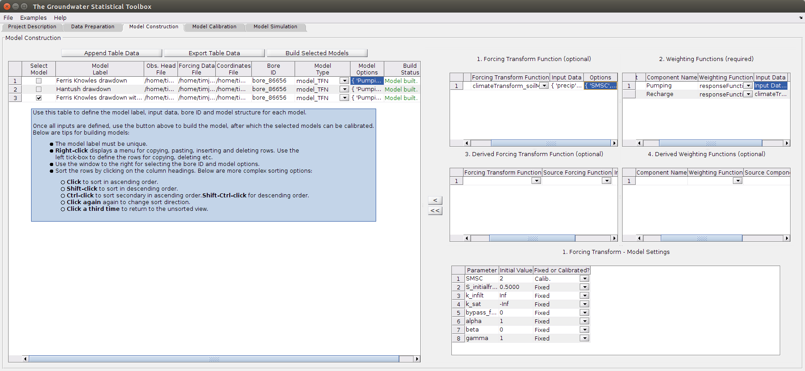

HydroSight - Model Construction GUI Tab
Contents
Overview
The Model Construction tab allows the construction of any number of time-series models, each with different inputs and settings. Once models are constructed, the models can be calibrated using the next GUI tab. Additionally, a large number of models can be very efficiently constructed using the copy and paste functionality of the table (right click to access) and the import and append button.
The tab allows the following to be undertaken:
- Input water level data and forcing data.
- Selection of the category of time-series model.
- Detailed construction of the selected category of model.
The screenshot below illustrates the main features of the tab. Specifically:
- The left-hand window tabulates the bores to be constructed.
- Unique data and model structures can be defined for each row of the table.
- The right-hand pane allows detailed construction of the selected type of model.
- For some model types, the bottom of the right-hand pane shows sub-options for model construction. In the screenshot below, sub-options are shown for the soil moisture model to transform rainfall to recharge.
- Buttons above the table allow export of the table or appending of a .csv file.

Getting Started
To construct a time-series model for a bore, complete the following steps:
- Input a label for the model. This is used in the next tabs to define the model and must be unique.
- Input the observed head, forcing data and coordinates files.
- Input the bore ID to model. When you place the cursor in the Bore ID column a list of bore IDs should be displayed on the right, from which you can select a bore ID.
- Select the type of model. The available models are Transfer Function Noise (TFN) models and Exponential Smoothing models. The TFN model is the recommended model for forcing decomposition and interpolation or extrapolation.
- Define the model options. Selected models (e.g. TFN models) will display a pane on the right for you to define the model. See here for details on building a TFN model.
- Select the models to be constructed using the left column of tick boxes.
- Click on the button Build Selected Models to build the models.
- If any models were successfully constructed then you can proceed to the calibration tab, where these models will be listed.
Inputs
The following inputs are available for this tab. The bold inputs are required.
- Model Label : Short unique string labelling the model.
- Obs. Head File : full path to the .csv file of observed head.
- Forcing Data File : full path to the .csv file of forcing data.
- Coordinates File : full path to the .csv file of bore and forcing data coordinates.
- Bore ID : bore ID for modelling, input using the right-hand list of bore IDs.
- Model Type : the category of model. Based upon the selection, different model options are presented.
- Model Options : selected model types may allow various options to be input. For the TFN model, the user must input a weighting function (e.g. Pearson's function for climate forcing) and select a forcing to be weighted. The forcing can also be transformed prior to the weighting using an optional first step (see the above screenshot).
Outputs
The following outputs are presented within the table:
- Build Status : the status of the model construction is displayed within the table. Error messages for the construction are also displayed.